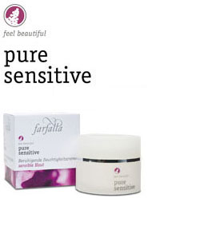

pure sensitive
Herkän ihon hoitoon
1. Ravitsee ja rauhoittaa ihoa.
2. Parantaa huomattavasti ihon kosteustasapainoa.
3. Antioksidantit suojelevat ihoa vapailta radikaaleilta.
4. Hoitaa ja elvyttää ihoa muuttuvissa olosuhteissa (ikä, stressi jne.)
Tehokkaat, vaikuttavat aineosat
Syyssyreeniuute (Buddleja davidii)Ihanteellinen oksidanttisuoja päivittäisiä ympäristön vaikutuksia, etenkin vapaita radikaaleja vastaan. Testit osoittivat, että ihon kosteustasapaino parani 33%:lla kahden tunnin ja 28%:lla kuuden tunnin sisällä voiteen käyttämisestä.
Kruunuohdake (Onopordum acanthium)
Uudistavien ominaisuuksiensa vuoksi kruunuohdakeuute suojelee ihoa luonnollisesti. Se tasapainottaa ihon luonnollista hydrolipidikerrosta ja tuo iholle rentoutuneen tunnun.
Eteeriset öljyt
Hellävaraisimmat luomulaatuiset eteeriset öljyt hyvin pieninä määrinä tuovat voiteeseen miedon ja miellyttävän tuoksun. Ne sopivat erityisen hyvin juuri herkälle iholle.
Rauhoittava kosteusvoide
Herkän ihon päivä- ja yövoide. Luomuviljelty syyssyreeniuute (Buddleja davidii) rauhoittaa herkkää ihoa ja antaa parhaan mahdollisen suojan vapaita radikaaleja vastaan. Kruunuohdakeuute (Onopordum acanthium) uudistaa, elvyttää ja rentouttaa ihoa ja helpottaa kireyttä. Ihon kosteustasapaino paranee. Mieto ja miellyttävä tuoksu. Käytä aamuin illoin puhdistuksen jälkeen.
100% luonnollisista aineista.
95% sertifioitavissa olevista aineista luomua.
 Vegan
Vegan

Farfallan toiminta on todellisesti eettistä.
Farfalla mm. toteuttaa hyväntekeväisyysprojekteja ja pitää huolta viljelijöistään.
Lue lisää
Maahantuonti ja lisätiedot Auringosta Itään, Kuusta Länteen Tukku Yhteystiedot
Maahantuonti ja lisätiedot Auringosta Itään, Kuusta Länteen Tukku Yhteystiedot